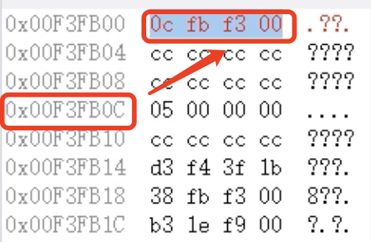
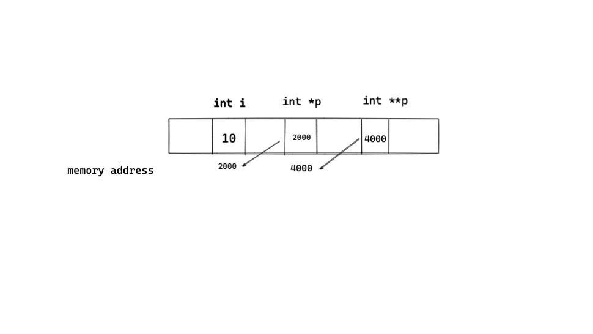

指针
摘要：
- 指针的本质
- 指针的传递和偏移
- 二级指针
对32位操作系统来说，有32根总线，
内存地址最多2^32个，用二进制编码地址的话应该是32个bit，也就是4个byte的大小用来存内存地址。
用16进制表示就是8个16进制数
在内存视图中查看：
- 看到四组十六进制数
- 每组两位
1.指针的定义
指针变量存储的内容是一个变量的内存地址
内存地址（针对32位操作系统）
每一个内存地址对应4字节
#include <stdio.h>
int main(){
int i=5;
int *i_pointer = &i;
// 定义一个指针变量i_pointer 存储i的内存地址
}

指针变量的初始化一定指向某个变量的内存地址
取地址操作符与取值操作符
- 取地址操作符&，通过这个操作符可以获取一个变量的内存地址值
- 取值操作符*，可以获得一个地址对应的数据
#include <stdio.h>
int main()
{
int i = 5;
int* p = &i;
printf("i=%d\n",i);//直接访问
printf("*p=%d\n",*p);//通过内存地址间接访问
}
需要注意：
-
定义指针变量时必须制定指针变量的类型，整型变量指针和浮点型变量指针不能混用
只有整形变量的地址才能放到指向整型变量的指针变量中。
2. 指针的使用场景
- 传递，c语言的函数调用是值传递，实参赋值给行参
- 偏移
2.1 指针的传递
c语言函数调用采取值传递
#include <stdio.h>
void change(int j)
{
j = 5;
}
int main()
{
int i = 10;
printf("before change i=%d",i);
change(i);
printf("after change i=%d",i);
return 0;
}
/Users/uichuan/CLionProjects/c2022/pointer/cmake-build-debug/pointer
before change i=10
after change i=10
Process finished with exit code 0
当main函数开始执行时，开辟栈空间，在调用change函数时，操作系统为change函数以及其内部参数在栈空间内分配内存空间。
在调用change函数时，实际上是将i的值赋给j（值传递），
当change函数执行结束后，栈空间释放，j被释放，i不会改变

2.2 指针的偏移
指针偏移的长度是其基类型的长度，sizeof（ElemType）
void类型的指针无法偏移
#include <stdio.h>
int main()
{
int a[5] = {1,2,3,4,5};
int *p; //对一个指针变量进行取值，得到的类型是其基类型
p = a;
printf("*p=%d\n",*p);
for(int i=0;i<5;i++)
{
printf("%d\n",*(p+1));
}
}
3.指针与一维数组
一维数组的数组变量名存储的是数组的首地址
数组 传递时，弱化为指针
#include <stdio.h>
void change(char *d)
{
d[0];
}
int main()
{
char c[10] = "hello";
change(c);
}
4. 动态内存申请malloc
c语言的数组长度固定是因为其定义的整型，浮点型，字符型变量，数组变量都在栈空间中，
栈空间的大小在编译时是确定的，如果使用空间的大小不确定，那么就要使用堆空间。
使用malloc申请的是堆空间，不会随着函数的执行结束而释放
#include <stdio.h>
int main()
{
int i;//申请多大空间
scanf("%d",&i);
char *p;
p = (char*)malloc(i);//malloc申请空间的单位是字节
strcpy(p,"malloc success");
puts(p);
free(p);//释放空间
p = NULL;//如果不把p置为NULL，则p为野指针
return 0;
}
释放空间时p的值必须和初始时一样，释放空间时指针不能偏移
void *p --无类型指针
malloc返回无类型指针
5. 栈空间与堆空间的差异
-
在栈空间内，系统会自动释放内存（在函数结束之后）
-
堆空间内，在程序释放空间之前，不会释放内存
#include <stdio.h>
#include <stdlib.h>
#include <string.h>
char* print_stack()
{
char c[17] = "i am print_stack";
puts(c);
return c;
}
char *print_malloc()
{
char *p = (char*)malloc(30);//申请20字节堆空间，接收字符型指针
strcpy(p,"i am print_malloc");
puts(p);
return p;
}
int main()
{
char *p;
p = print_stack();//栈空间会随着函数的执行结束而释放
//puts(p);
p = print_malloc(); //此处p指向堆空间，不会因为print_malloc()函数的执行结束而释放内存空间
puts(p);
return 0;
}
i am print_stack
F // 产生乱码-> 内存空间已经被释放
i am print_malloc
i am print_malloc
6.字符指针与字符数组的初始化
字符指针可以初始化赋值一个字符串，字符数组初始化也可以赋值一个字符串
#include <stdio.h>
#include <stdlib.h>
#include <string.h>
int main()
{
char *p = "hello"; //把字符串型常量"hello"首地址给p
char c[10] = "hello";//等价于strcpy(c,"hello")，栈空间内
c[0] = 'H';//在栈空间内，可以修改
p[0] = 'H';//指针指向的数据区域不可以修改
p = "world";//将字符串"world"首地址赋值给指针变量p
c = "world";//非法，c已经有固定的内存地址
return 0;
}
7.二级指针
一级指针的使用场景是传递和偏移，
二级指针只服务于一级指针的传递和偏移。
#include <stdio.h>
void change(int **pi, int *pj) {
*pi = pj;
}
// 想要在子函数中改变一个变量的值，必须传入变量的内存地址
//同理，想要在子函数中改变一个指针变量的值，必须传入 指针变量的内存地址`
int main() {
int i = 10;
int j = 5;
int *pi = &i;
int *pj = &j;
printf("pi_value=%d\n", *pi);
change(&pi, pj);
printf("pi_value=%d\n", *pi);
// &pi此时相当于二级指针，用二级指针改变pi的内容
}
pi_value=10 // 通过二级指针change前---输出pi指针指向的值
pi_value=5 // 通过二级指针change后---输出pi指针指向的值
二级指针的初始化是一级指针取地址
int **p2;
p2 = &p; //p此时是一级指针
